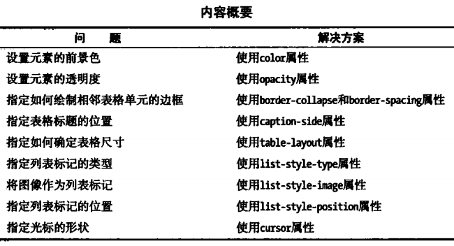
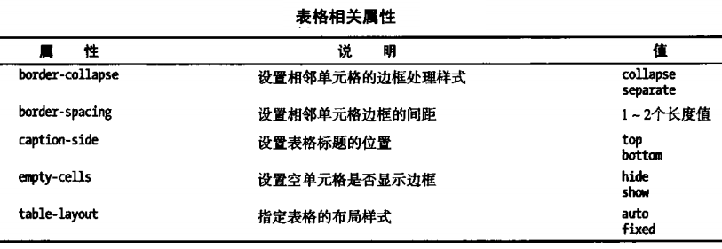
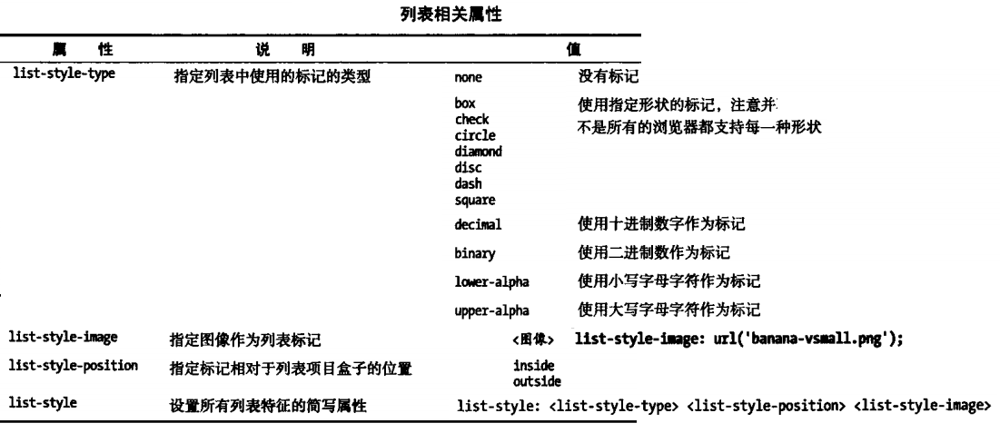
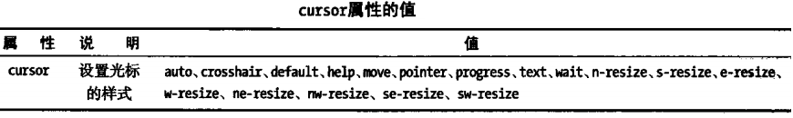

使用其他CSS属性

color属性设置元素的前景色，一般用于设置文本的颜色。opacity属性设置元素的透明度，取值范围为0-1，0表示完全透明。

合并表格边框：
border-collapse用来控制table元素相邻单元格边框的样式，默认表格边框如下表所示：
浏览器为表格绘制了一个边框，同时还为每个单元格绘制了边框，显示出双边框的效果，使用border-collapse属性可以改变这种效果，collapse值告诉浏览器不要为相邻元素绘制两个边框，效果如下：
默认情况下，即使单元格为空，浏览器也会为单元格设置独立的边框，设置empty-cells值为hide，浏览器就不会为空白单元格绘制边框了。
caption-side属性有两个值top（默认值）和bottom，用于设置表格标题的位置。
默认情况下，浏览器会根据表格每一列中最宽的单元格设置整列单元格的宽度。table-layout属性的默认值是auto，当它使用另一个值fixed时，表格的大小是由表格自身和单独每列的width值设定的。因此，只要获取了一行表格数据，浏览器就会确定列宽。

